Nem todo mundo pode acessar tudo.
A resposta precisa considerar quem pergunta e quais informações essa pessoa tem autorização para consultar.
IA corporativa para transformar informações dispersas em decisões assertivas
Explore o que podemos resolver ↓CONFIANÇA QUE SE CONSTRÓI NO TRABALHO
POR QUE IA CORPORATIVA?
Sua empresa tem regras que a inteligência artificial precisa respeitar.
Conectar uma IA ao trabalho envolve muito além do modelo: quem pode acessar cada informação, como o negócio funciona e o que mantém tudo integrado, seguro e em operação.
A resposta precisa considerar quem pergunta e quais informações essa pessoa tem autorização para consultar.
Procedimentos, critérios e exceções precisam orientar o uso da IA no dia a dia da organização.
Conectar sistemas, manter fontes atualizadas e acompanhar mudanças exige engenharia contínua.
Compliance, segurança, manutenção e evolução fazem parte da operação de uma solução de IA.
É PARA ESSE AMBIENTE QUE CONSTRUÍMOS.
Na NeuralMind, permissões, regras de negócio, integração às bases e governança entram na construção da solução desde o início.
Reunimos pesquisa, engenharia e conhecimento de domínio para colocar a IA a serviço das decisões da sua empresa.
Conheça nossos produtos ↓NOSSOS PRODUTOS
Três especialidades para transformar
informação em conhecimento útil.
01 / CONHECIMENTO NO TRABALHO
Suíte para conhecimento, análise e extração de dados empresariais. Analise documentos, consulte manuais e extraia informações de matrículas de imóveis.
Converse sobre NeuralStudio ↗02 / ANÁLISE ESPECIALIZADA
Apoio ao trabalho jurídico e regulatório, do pré-contencioso ao contencioso.
Explore o case SofIA ↗03 / INTELIGÊNCIA PARA O CUIDADO
Inteligência artificial para apoiar a análise de exames médicos e a prevenção.
O especialista no centro da decisão.
Explore o case PrioScan ↗Fotografia de saúde: SHVETS production / Pexels.
MODELOS DE LINGUAGEM / DIREITO BRASILEIRO
A linguagem do Direito.
O contexto do Brasil.
Uma família de modelos desenvolvida por NeuralMind e Escavador para construir aplicações jurídicas com conhecimento de domínio.
Explore o projeto Jurema →IDEIAS PARA O TRABALHO REAL
IA corporativa / 1 de jun. de 2026
Jurídico / 25 de mai. de 2026
Jurídico / 18 de mai. de 2026
REPERCUSSÃO
UM ECOSSISTEMA QUE IMPULSIONA A INOVAÇÃO



CADA DESAFIO COMEÇA COM UMA CONVERSA.
Conte à nossa equipe qual decisão você precisa apoiar.
Converse com a NeuralMind ↗